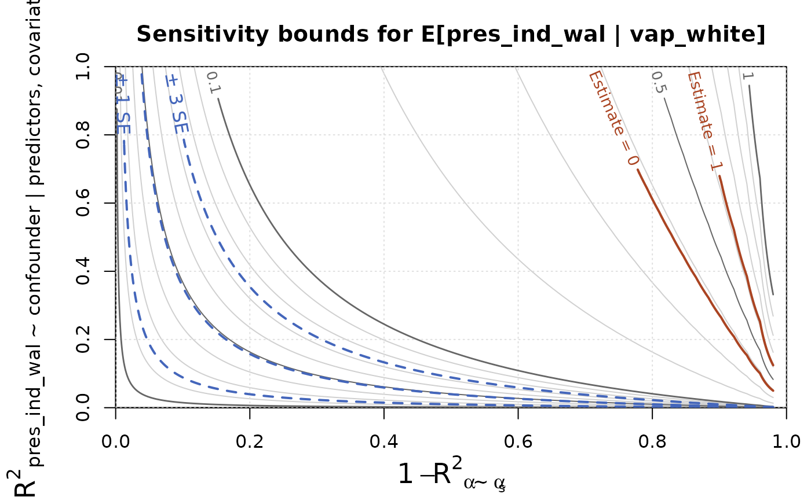

Displays bias bound as a function of c_outcome and c_predictor in
ei_sens() on a contour plot. Bounds on the outcome, and standard errors of
the point estimate, can be overlaid as contours on the plot to aid in
interpretation. Benchmarked values of c_outcome and c_predictor based on
the observed covariates can also be overlaid.
Usage
# S3 method for class 'ei_sens'
plot(
x,
y = NULL,
predictor = NULL,
bounds = NULL,
bench = NULL,
plot_se = 1:3,
contour_exp = -2:-1,
...,
lwd = 1,
pch = 8,
cex = 1
)Arguments
- x
An ei_sens object
- y
An outcome variable, as a character vector. Defaults to first.
- predictor
A predictor variable to plot, as a character vector. Defaults to first.
- bounds
A vector
c(min, max)of bounds for the outcome, which will affect the contours which are plotted. Ifbounds = NULL(the default), they will be inferred from the outcome variable: if it is contained within \([0, 1]\), for instance, then the bounds will bec(0, 1). Settingbounds = FALSEforces unbounded estimates.- bench
A data frame of benchmark values, from
ei_bench(), to plot.- plot_se
A vector of multiples of the standard error to plot as contours.
- contour_exp
Powers of 10 for which to plot contours of the bias bound.
- ...
Additional arguments passed on to
contour()- lwd
Scaling factor for the contour line widths
- pch
The point type (see
points()) for the benchmark values, if provided- cex
Scaling factor for the benchmark points and labels, if provided
References
Chernozhukov, V., Cinelli, C., Newey, W., Sharma, A., & Syrgkanis, V. (2024). Long story short: Omitted variable bias in causal machine learning (No. w30302). National Bureau of Economic Research.
Examples
data(elec_1968)
spec = ei_spec(elec_1968, vap_white:vap_other, pres_ind_wal,
total = pres_total, covariates = c(state, pop_urban, farm))
m = ei_ridge(spec)
rr = ei_riesz(spec, penalty = m$penalty)
est = ei_est(m, rr, spec)
sens = ei_sens(est)
plot(sens)

plot(sens, bench = ei_bench(spec), plot_se=NULL)